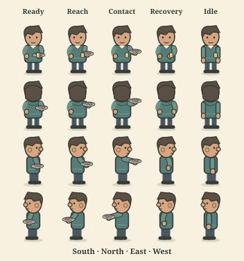
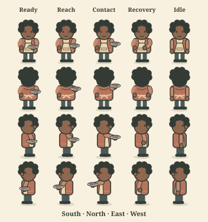
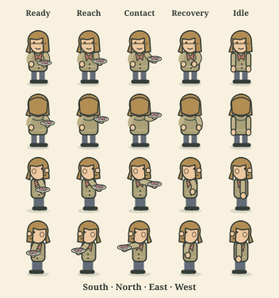
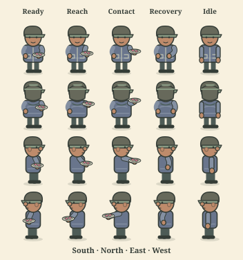

IDLE HANDS 2 · ART PREVIEW
A little thanks, all round.
Four neighbours. One brave teapot. No catering qualifications.
Separate art preview · No game saves, purchases or rewards.
Serving the town. Briefly.
Shown at game size. Each gesture ends back at rest.
Ready to preview. The plate is artwork, not an inventory count.
Certified to hold tea.
A keepsake with a handle on civic life.
Artwork only. Item ownership, placement and serving in the game come later.
Inspect all 80 poses



